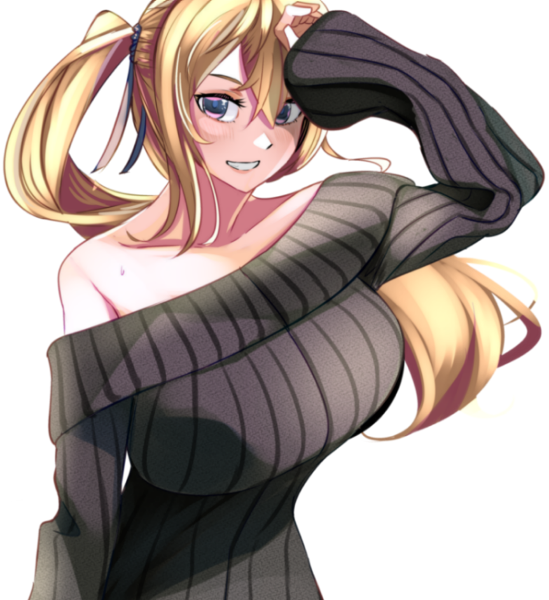

メインログ / 雑談ログ
シナリオ1：「Devil's_Alliance」
シナリオ2：「Blastic Crisis」
キャラシート
PC1：コーネリア (キャラシート) PL：LISPPC2：本野仁 (キャラシート) PL：カピバラ
PC3：サテライト (キャラシート) PL：ふろずん
PC4：佐月零 (キャラシート) PL：めい
PC5：糸金助人 (キャラシート) PL：紫閃
目次
■オープニングフェイズ01 ダークナイト
02 理想の果て
メインプレイ
シーン1 ダークナイト
東京 市街地
GM : 夜、降りしきる雨の中。ダークナイトが佇んでいる。
GM : 足元には血溜まり。それは周囲に広がっており、傷ついたヒーローたちが倒れ、うめいている。
GM : ──すべて、ダークナイトに倒されたヒーローだ。
GM : 倒れているヒーローらが、呻きながらつぶやく。
男ヒーロー : 「な、なんという強さだ…これが、No1ヒーローだった男の実力か……」
女ヒーロー : 「くっ…この強さ、本物のパラディンね……」
ディアボロス : 「まさか、このディアボロスがここまで歯が立たないとは…強すぎる……ッ！」
GM : ……そんなヒーローたちを一瞥もせず、ダークナイトは無言でその場を去っていった。
GM : ──翌日の新聞の1面には、どの新聞社の物もでかでかと倒れたヒーローたちが映った写真が載っている。
GM : 記事には「なぜあのNo1ヒーローがヴィランに！？」「次々と襲われるヒーロー！誰もダークナイトには勝てないのか！？」と、人々の不安を煽るかのように大きく見出しに書かれていた。
GM : ……しかし、それらは全て事実だ。No1ヒーロー・パラディンは悪に手を染めた。そして、彼に敵う者は誰ひとりしていない。
GM : …今の所は。
シーン2 理想の果て
■PC1：コーネリア
ロイス：パラディン
推奨感情 P:憧憬/N:悔悟
No1ヒーローであったパラディンは、悪の仮面を手にとってヴィランとなった。
今はダークナイトと呼ばれ、キミたちヒーローに敵対する存在となってしまった。
今度出会うときは、彼は憧れのヒーローなどではなく、敵となる。
果たしてキミは、彼と全力で戦えるだろうか？
コーネリア : 1d10+33 (1D10+33) ＞ 4[4]+33 ＞ 37
東京 某カフェ
GM : 今となっては遠くなってしまったいつかの日。
GM : コーネリアは、パラディン……いや、スーツを脱いだ彼、"的場敬吾"と共に都内のカフェを訪れていた。
GM : 昭和に迷い込んだかのような、ブラウンが基調となったカフェの隅で小さなテレビがパラディンの活躍を映している。
パラディン : 「大丈夫だ。ここからはもう、誰も死なせない」
GM : 誰もが安心し、「正義は勝つのだ」と信じたであろう彼の決め台詞に、善良な市民たちが湧く。
GM : そのテレビに映る人物が、コーネリアの前で優雅にコーヒーを飲んでいた。
コーネリア : 「どこに行っても"パラディン"の活躍で持ち切りね～」 どこか楽し気に口を付けていたカフェモカを置く。
コーネリア : 「それにしても……」 テーブルに肘をつき手の甲に顎を載せて、休日の”パラディン”の姿を見る。
コーネリア : 「千両役者はスーツを脱いでも絵になる、ってわけ」
コーネリア : 優雅にコーヒーを飲むその姿を見てため息をつく。
的場敬吾 : 「む……それを君に言われるのは、非常に光栄なことかもしれないな。自分ではスーツを脱げばただのおじさんだと思っていたが」
的場敬吾 : 普段生真面目にヒーローをやっている彼が見せないような表情で、冗談めかしたように微笑む。
コーネリア : 「あら、そういうジョークも言うのね？ 素顔のあんたは」
的場敬吾 : 「私だって人間だ。オフの時くらいあるさ」
的場敬吾 : 「君は……いつ会っても、どこで見ても君のままだな」
的場敬吾 : そう、テレビの中で日焼け止めクリームのCMモデルを務めるコーネリアを眺めつつ返す。
コーネリア : 「当然！ ハリウッドスターは私生活もスターでなきゃいけないからね」 CMのポーズを寸分狂いなく再現してみせる
コーネリア : 快活なふだんのパーソナリティは一瞬で鳴りを潜め、映像の中の日本らしい乙女然とした少女の雰囲気を纏う。
GM : パラディンはコーネリアの纏う雰囲気の変化に、少し目をしばたたかせてからフフッと笑う。
的場敬吾 : 「……全く、君にはいつだって驚かされる。私生活も何も、君はありのままを生きているというわけか」
コーネリア : 「ありのまま、って言っていいのかしらね？ 私はいつも何かを演じて、それを見てくれる人がいないと生きられない人間だから」
コーネリア : 「ヒーローの私。女優の私。そして、いまここであんたとコーヒーを飲んでいる私……」
コーネリア : 「全部微妙に違うように見えるけど、人は自分の中に存在しないものを演じることはできないし、どの側面も否定するようなものじゃないわ」
コーネリア : 「……なんて、考えてもわかんないわよね。あ、おかわりくださーい！」
コーネリア : 明るく元気な様子は変わらないが、言葉の端からは”コーネリア”という人間の一部分としてヒーローを務める等身大の少女の苦悩が垣間見える。
的場敬吾 : 「……」しばらく黙り、彼女の様子を見てから再度口を開く。
的場敬吾 : 「演じる、というのは決して悪い事ではない。それは役者ではない私も、そしてヒーローではない人々であっても当然している事だ」
的場敬吾 : 「それが社会で生きるという事だ。相手に合わせ、一番その場をより良い状態で保つのが人間という生き物なのだから」
的場敬吾 : 「……私もかつては、『本当の自分』とは何なのかと苦悩した日もあった。どう生きるのが正解なのか、何を最も大切にするのが『自分』なのか……」
的場敬吾 : 「……どう生きれば、後悔をせずに済んだのか」
的場敬吾 : 小さく息を吐き、首を振る。
的場敬吾 : 「……過去に囚われるのもまた、どうしようもない事だ。さて、話を戻そう」
コーネリア : 「”パラディン”にもあるんだね、そういう悩みは……」 頷いて、深く問いただそうとはしない
的場敬吾 : 「…私もまた、人間と言うわけだ」 肩をすくめて笑って見せる
的場敬吾 : 「君も言った通り、どの一面も否定してはならない。その全てが『本当の君』であり、君を応援する人々がいる事もまた真実なのだから」
的場敬吾 : 「ただ……これはお節介かもしれないが」
的場敬吾 : 「君は生粋の役者で、ヒーローで、そしてまだ16歳の少女でもある」
的場敬吾 : 「そんな君の全てを理解し、支えてくれる人を身近に作ると良いだろう。性別も年齢も人種も、誰だって構わない。人数も多ければ多いほどいい。ただ、君が信じられる人を傍に置きなさい」
的場敬吾 : 「……できるだけ長い間、君と共に歩んでくれる人をな」
的場敬吾 : そう、まるで実の娘に向けるかのような慈しみの籠った声で伝える。
コーネリア : 「簡単にできることじゃないわね。でも……」
コーネリア : 「ヒーローの大先輩がそう言うなら、頑張ってみようかしら」 年相応の、不完全性に満ちた笑顔でそう答える。
的場敬吾 : そんなコーネリアの姿を見て、安心したようにうなずいて見せる。
的場敬吾 : 「ああ。もしそんな仲間ができたなら、私にも報告してくれると嬉しい」
コーネリア : 「オーケイ、きっと一番に報告するわ！」 親指を立てる
GM : そんなやり取りをしているうちに、店員によって「お待たせいたしました」とコーネリアの注文したカフェモカがテーブルに置かれる。
GM : 優しいミルク色ととろけるようなブラウン、そして窓から差し込む暖かな光。
GM : その記憶も、今となってはセピア色に滲んでしまった。
コーネリア : 「――バカね。ここに来たって、時間が戻るわけじゃないのに」
コーネリア : あの日と同じ昭和レトロの雰囲気を纏ったカフェの片隅で、一人つぶやく。
コーネリア : どのチャンネルも、今は”ダークナイト”の話題で持ち切りだが、ニュースの内容は頭の中を右から左へ通り過ぎていく。
コーネリア : もともと日本での活動基盤を持たなかったコーネリアにとって、甲斐甲斐しく自分の面倒を見てくれた”パラディン”は、先輩ヒーローであると同時に歳の離れた兄のような存在だった。
コーネリア : 自分がどんなに速く走っても追いつけない、ずっと先を走る存在のように思っていた。
コーネリア : 「……違う……本当はわかってたはずなのに」
コーネリア : 彼も、自分と同じ迷える青年だった。外から見える強い部分と同じくらい、弱い部分だってたくさん持っていた。
コーネリア : ずっと近くで彼を見ていた、天才役者である自分が、一番それをわかっていたはずだったのに。
コーネリア : 大粒の涙が、冷めきったカフェモカの中に零れ落ちる。
コーネリア : 彼が己の過去を後悔したあの時、もっと自分が踏み込んでいれば、違う未来があったのだろうか？
コーネリア : ……そんな迷いを振り払うように、涙を拭って一気にカフェモカを飲み干す。
コーネリア : 「はは……しょっぱい。あの時と全然違う味だ……」
コーネリア : 時間は伸びたり縮んだりするが、過去には戻らない。どんなに速く走るヒーローでも、それは変えられない。当たり前のことをコーヒーの味から教わって、左右の頬を思いっきり両手で叩く。
コーネリア : じじっ、と髪留めが焦げ落ち、ブロンドの髪がばさっと開いた。
コーネリア : 「行こう……時間は待ってくれない」